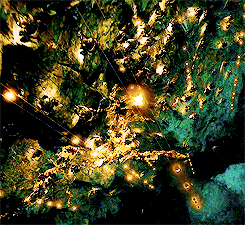
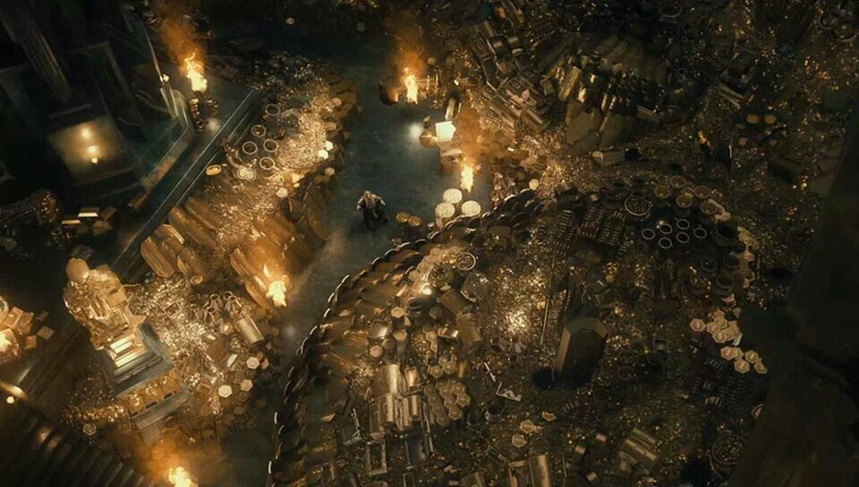

Interactive Treasure Game
"You seek the treasure of Mara, glittering gold. It is yours."
The vault doors begin to unlock as gold coins begin to rain down from the relief above as the doors open. Inside the Hall of Promise, piles of gold, bronze statues, and priceless carvings fill vestibules on each side with a massive gold face of Mara at the far end of the hall. The room is illuminated with shimmering golden light where images of gold and other treasures are visible.

